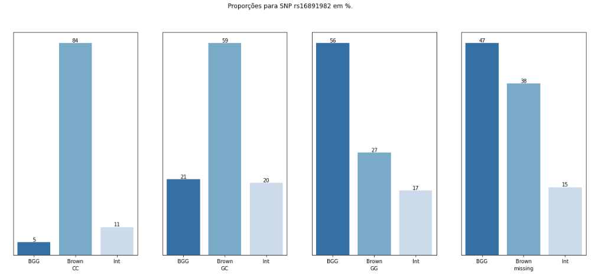

Parte 2: Preparação e Análise dos dados¶
Preparação dos Dados¶
Carregando os arquivos:
phenotypes = pd.read_csv('datasets/eye_color_df_snp.csv')
snps = pd.read_csv('datasets/users_snps.csv')
Relembrando como são os dados:
- Dataset com fenótipos:
- Tamanho: 1286
-
Dataset com snps:
- Tamanho: 1264
Juntando os dados:
df = pd.merge(left = snps, right = phenotypes, how = 'left', on = 'user_id')
display(df.head(2))
Resultado:
Tamanho: 1264
Conjunto com todas as snps carregadas:
snp_list = ['rs12913832', 'rs1800407', 'rs12896399', 'rs16891982', 'rs1393350',
'rs12203592', 'rs1129038', 'rs116363232', 'rs1289399']
Tratamento dos atributos¶
Cada atributos de snp deve conter apenas 4 classes diferentes:
- "RR": Dois alelos com o valor de referência.
- "RM": Um alelo com o valor de referência e outro com o valor da mutação.
- "MM": Dois alelos com o valor de mutação, e
- "missing": valor que não foi obtido no processo de aquisição.
Após contar os valores de cada coluna foi constatada a necessidade das seguintes intervenções:
- Descartar entradas que tiveram fora dos padrão. (Exemplo: BB quando os alelos tem valor A ou G.)
- Transformar RM em MR visto que estes têm o mesmo valor.
Análise individual das colunas:¶
Primeira Coluna
Snp analisada: rs12913832
GG 566
AG 381
AA 167
missing 148
BB 1
Entradas fora do padrão: BB
Removendo entradas fora do padrão...
Tamanho df final: 1263
Segunda Coluna
Snp analisada: rs1800407
CC 1044
CT 113
missing 59
TC 37
TT 8
GG 1
Entradas fora do padrão: GG
Entradas iguais: ['CT', 'TC']
Removendo entradas fora do padrão...
Substituindo TC por CT...
Tamanho df final: 1262
Terceira Coluna
Snp analisada: rs12896399
GT 432
GG 344
missing 230
TT 197
TG 57
AA 1
Entradas fora do padrão: AA
Entradas iguais: ['GT', 'TG']
Removendo entradas fora do padrão...
Substituindo TG por GT...
Tamanho df final: 1261
Quarta Coluna
Snp analisada: rs16891982
GG 757
missing 323
CG 124
CC 44
Entradas fora do padrão:
Entradas iguais: ['CG', 'GC']
Removendo entradas fora do padrão...
Substituindo GC por CG...
Tamanho df final: 1261
Quinta Coluna
Snp analisada: rs1393350
GG 634
AG 401
missing 147
AA 73
GA 5
Name: rs1393350, dtype: int64
Entradas fora do padrão:
Entradas iguais: ['AG', 'GA']
Removendo entradas fora do padrão...
Substituindo GA por AG...
Tamanho df final: 1261
Sexta Coluna
Snp analisada: rs12203592
CC 794
CT 221
missing 148
TC 59
TT 38
Entradas fora do padrão:
Entradas iguais: ['CT', 'TC']
Removendo entradas fora do padrão...
Substituindo TC por CT...
Tamanho df final: 1261
Sétima Coluna
Snp analisada: rs1129038
TT 595
CT 298
CC 183
TC 105
missing 78
Entradas fora do padrão:
Entradas iguais: ['CT', 'TC']
Removendo entradas fora do padrão...
Substituindo TC por CT...
Tamanho df final: 1261
Oitava Coluna
Snp analisada: rs116363232
missing 1090
CC 167
CT 3
Entradas fora do padrão:
Entradas iguais: [' ', ' ']
Removendo entradas fora do padrão...
Substituindo por ...
Tamanho df final: 1261
Nona Coluna
Snp analisada: rs1289399
CC 460
missing 429
CT 3
Entradas fora do padrão:
Entradas iguais: [' ', ' ']
Removendo entradas fora do padrão...
Substituindo por ...
Tamanho df final: 1261
Tratamento de valores nulos¶
Algumas entradas ainda têm valores nulos que não foram detectados no processo de aquisição dos dados, vamos trocar por "missing".
df.isna().sum()
rs12913832 1
rs1800407 1
rs12896399 1
rs16891982 4
rs1393350 1
rs12203592 1
rs1129038 369
rs116363232 1
rs1289399 369
user_id 0
genotype_filename 0
Eye color 0
color_cat 0
df = df.fillna("missing")
Análise dos Dados¶
Análise de proporção de valores faltantes em nossos atributos:
Código para Criação da Figura
c = pg.Bar(print_values=True, print_values_position='top', x_label_rotation=20)
c.title = 'Dados Faltantes (em %)'
c.x_labels = snp_list
c.add('Missing', [round((df[col] == 'missing').sum()/len(df), 2) for col in snp_list])
c.add('Not Missing', [round((1 - (df[col] == 'missing').sum()/len(df)), 2) for col in snp_list])
c.value_formatter = lambda x: f"{100*x}%"
c.render_to_file('missing.svg')
pgr(c, "missing")
Remoção de atributos pouco úteis:
Devido à grande proporção de valores faltantes, as 3 últimas snps não serão muito úteis para predição e serão removidas.
df = df.drop(columns=snp_list[-3:])
Para entender melhor quais valores são mutações e quais são referência segue tabela descritiva das snps.
| SNP | GENE | Mutação |
|---|---|---|
| rs12913832 | HERC2 | Referência: AA, Presença 1: GA/AG, Presença 2: GG |
| rs1800407 | OCA2 | Referência: CC, Presença 1: CT/TC, Presença 2: TT |
| rs12896399 | LOC105370627 | Referência: GG, Presença 1: GT/TG, Presença 2: TT |
| rs16891982 | SLC45A2 | Referência: CC, Presença 1: GC/CG, Presença 2: GG |
| rs1393350 | TYR | Referência: GG, Presença 1: GA/AG, Presença 2: AA |
| rs12203592 | IRF4 | Referência: CC, Presença 1: CT/TA, Presença 2: CC |
Distribuição da Variável Alvo: color_cat¶
Código para Criação da Figura
labels = list(df['color_cat'].value_counts().index)
values = list( round( (df['color_cat'].value_counts()) / len(df), 4) )
c = pg.Bar(print_values=True, print_values_position='top', x_label_rotation=20)
c.title = 'Categoria de Cor dos Olhos'
for i in range(len(labels)):
c.add(labels[i], values[i])
c.value_formatter = lambda x: f"{100*x}%"
pgr(c, "color_count")
Distribuição das Features (snps):¶
Contagem Total e Contagem segmentada por categoria alvo¶
def plot_contagem(col):
fig, ax = plt.subplots(nrows=1, ncols=2, figsize=(20,9))
fig.suptitle(f"Análise da SNP {col} .")
sns.countplot(ax= ax[0], x=col, data=df, palette="Blues_r")
ax[0].set_title(f"Contagem total")
ax[0].set_xlabel(" ")
sns.countplot(ax= ax[1], x=col, hue="color_cat", data=df, palette="Blues_r", hue_order=["BGG", "Int", "Brown"])
ax[1].set_title(f"Contagem Segmentada")
plt.show()
for i in df.columns[:-1]:
display(plot_contagem(i))
Proporção da variável alvo por classe de cada atributo¶
for snp in snp_list[:-3]:
df_grouped = df.groupby("color_cat")[snp].value_counts().unstack()
df_grouped = df_grouped.apply(lambda x: round(x/x.sum(), 2) * 100)
df_grouped
fig, ax = plt.subplots(nrows=1, ncols=4, figsize=(20,8))
fig.suptitle(f"Proporções para SNP {snp} em %.")
#fig.axes.get_yaxis().set_visible(False)
for i in range(len(df_grouped.columns)):
y = df_grouped.columns[i]
sns.barplot(ax = ax[i], x = df_grouped.index, y=y, data = df_grouped, palette="Blues_r")
ax[i].set_xlabel(df_grouped.columns[i])
ax[i].set_ylabel(" ")
ax[i].get_yaxis().set_visible(False)
for j in ax[i].containers:
ax[i].bar_label(j,)

Correlações entre as Variáveis¶
Foi utilizado One Hot Encoding pra transformar em as variáveis categóricas em numéricas e então explorar a correlação linear entre as variáveis com um Mapa de Calor das correlações de Pearson entre as variáveis.
df_num = pd.get_dummies(df)
fig, ax = plt.subplots(figsize=(20,13))
ax = sns.heatmap(df_num.corr(), cmap="Blues", annot=True)
ax.set_title("Heat Map das correlações de Pearson entre as variáveis")
plt.show()
Baseline¶
Usando um simples classificador multiclasse do xgboost sem mexer no hiperparâmetros foram obtidos os seguintes resultados:
Acurácia de treino: 80,57%
Acurácia de teste: 72,42%
Classification Report (Teste),
precision recall f1-score support
0 0.84 0.82 0.83 211
1 0.81 0.67 0.74 169
2 0.21 0.41 0.28 37
accuracy 0.72 417
macro avg 0.62 0.63 0.62 417
weighted avg 0.77 0.72 0.74 417
Onde 0 = "BGG", 1 = "Brown" e 2 = "Int".
Mesmo sem um grande esforço de modelagem, foi possível encontrar resultados parecidos com o que se acha na literatura, inclusive com a mesma dificuldade: classificar cores intermediárias.
Os códigos para esse projeto podem ser encontrados no Github.